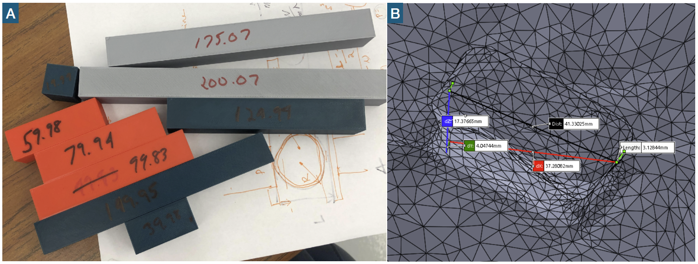
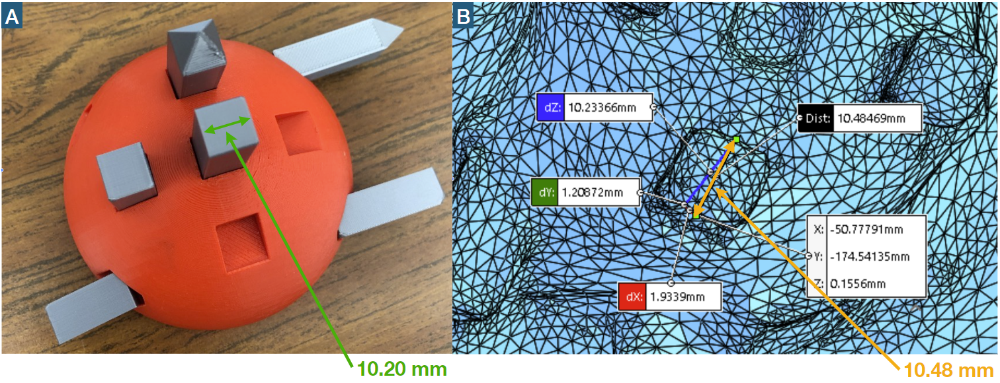
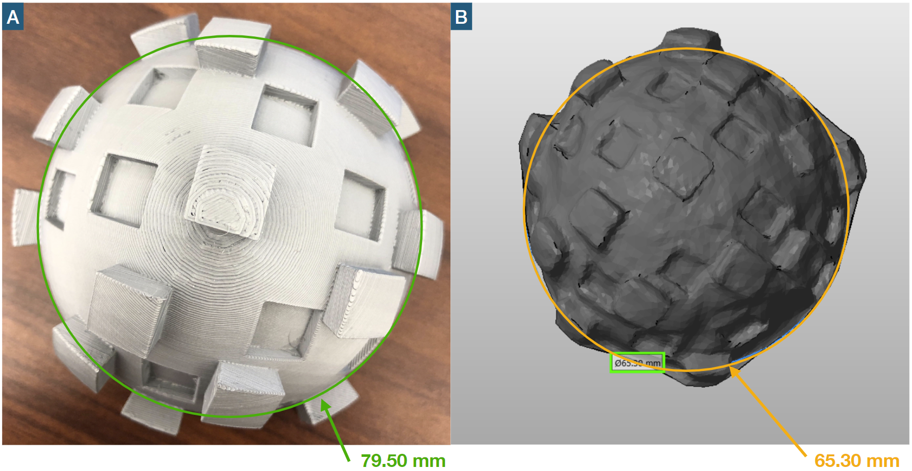

LiDAR
LiDAR is a technique that takes advantage of the time of flight data of lasers by pinpointing different geometry. Using these point clouds, the software can mesh them into a 3D model and we can measure precise distances and angles. The long-term goal of this project is that once the accelo-hat is accessible to soccer players in middle school to military men on the field. We should be able to collect 3D model data from them without the need for special equipment, maybe just an iPhone. Modern iPhones have LiDAR sensing technology that can be used to create a more immersive augmented reality experience. This method can also be used to create 3D models of objects within a certain size contraint. The reason why we are testing 3D reproducibility at high accuracy is to ensure that the helmets that are being manufactured are consistent with the CAD models. This includes both 3D printed parts in the lab and with unknown companies that produce these final products in different materials. Additionally, deformation occurs when a person wears the helmet as the material can stretch and cause permanent deformation in the future. These slight discrepancies in manufacturing and wear can cause the algorithm to be inaccurate and represent an unrealistic version of the brain inside the head. It is incredibly important to get the right distances from the sensors and the plane that is created by the x, y, and z sensors to calibrate the algorithm consistently.
1. Proposed Plan
Every modern iPhone is equipped with LiDAR technology that essentially emits an infrared laser. This laser will reflect off of an object and return back to a sensor where the point distance will be measured. Using these point clouds, the entire object can be reconstructed through a software program. Scanning the object with this LiDAR sensor will help create 3D models that are able to be measured in 3D space.
2. Testing Routine & Methodology
To have this experiment in a controlled environment, I created a 3D model on a CAD software. Here, I created a dome to represent a miniature helmet. Starting with determining the error related to 3D printing, a dome with cutouts was created. The errors were less than a percentage with the highest error being 0.324%, this confirmed that the 3D printer was accurate to our standards and ready for the experiment. The reflectivity of the surface was a critical part of the design process. Since lasers are being used, the surface cannot be too reflective or absorbent. However, more matte is better than more reflective as the lasers have a much higher probability of reflecting back to the sensors without diffraction. Grey was the optimal choice of color for this experiment, but the plastic is still too reflective for LiDAR applications. The app used is called Qclone and it gives the user a certain area to scan the object. Going around the object 360 degrees from different angles, the scan will be processed in the cloud and is available for viewing after several minutes.
3. Results
I first tested 3D printed rods where the sizes were known up to 0.001mm. The results were not the best as there were no linear relationship found between size and error. The most distinct features allow the LiDAR software to detect and construct the best 3D model. That is, if the model had indents and extrusions of different sizes and locations to break the symmetry.
3.1 Finding A Linear Relationship
Printing out different length rods and scanning them to see their measurement captured by LiDAR displayed no clear realtionship between length and error. Scanning objects from lengths of roughly 20 mm to 200 mm showed that there is a benefit to scanning longer objects. However, the errors are still too high to be considered a realiable method to measure distances, resorting me to use different techniques to find better accuracy. Note, that we are looking for accuracies that are < 1.00 mm.
3.2 Testing Different Geometry
Adding unique geometry might help the software recognize different parts of the model with respect to other unique area. Testing a dome shape with extruded parts of shapes and sizes helped break the symmetry between parts and hence constructed the best model possible. The errors were incredibly low, ranging from 2.75% to 0.68%, which equates to an difference of 0.28 mm and 0.54 mm respectively. The accuracy of this LiDAR scan was less than 1.00 mm! This was by far the most accurate model created during this experiment. Again, the larger distance is measured more accurately than the finer ones.
3.3 Acquiring More Detail
In order to obtain more detail from the models, I decided to add even more extrusions and indents in a random fashion. This way, the infrared lasers are able to impact and reflect at more angles, giving more resolution. This is exactly what happened as the model rendered to be more detailed. The diameter and extrusions had little deformations, nothing compared to the result before. The diameter reading is smaller than expected with an error of 17.86% and the extruded detail error of 16.10%. Though the errors were incredibly high, the detail in the model was acceptable. The extruded and indented parts could be easily recognizable which gives us the opportunity to measure distances to different parts of the structure with ease.
4. Conclusion
With this LiDAR technology, the models were able to be recontructd with either high accuracy or detail. It seems that there is a point where the adding details only hindered the performance of accuracy while it did increase resolution of the reconstructed moodel. Though these two models had detail and accuracy, the realiablity of the process is undetermined. I did manage to obtain an accuracy of < 1.00 mm accuracy, however, the models were susceptible to failure and many times the render would not even be produced due to lighting or feature issues. Hence for long term use, a higher resolution scanner will be required to capture all the detail. Furthermore, the back side of the object is unable to rendered as that requires the movement of the object. However, even with these downsides, the accessibility of LiDAR is appealing to the average consumer with a phone. You will be able to create these models without the need for special software or a powerful computer, and with improved phone specs, this could be a viable option in the future. This method was tested extensively to capture models with < 1.00 mm, which was proved that it could be done even though literature online says otherwise. Hunting for a better method to get a accurate and detailed model, I decided to try Photogrammetry.